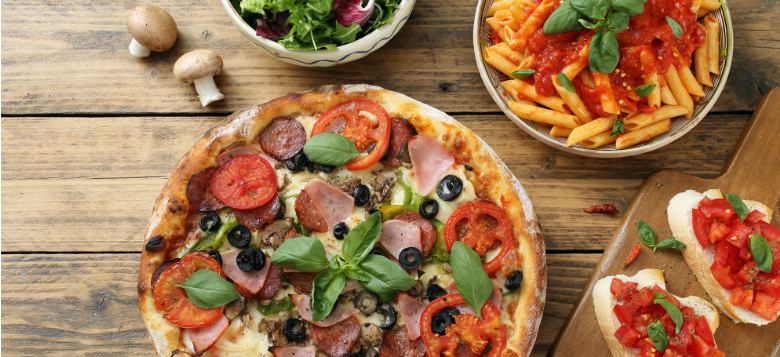

Favortie Foods
- SeaFood

- Asian Cuisine

- Italian Cuisine

Achievements
Progress in this course ( 100% )Progress in specialization capstone ( 20% )
Progress in life goals ( 1% )
More About Me
My reason for taking this course.
I plan on taking the many specialization courses to pursuit of becoming a full-stack delevoper for both web and mobile development